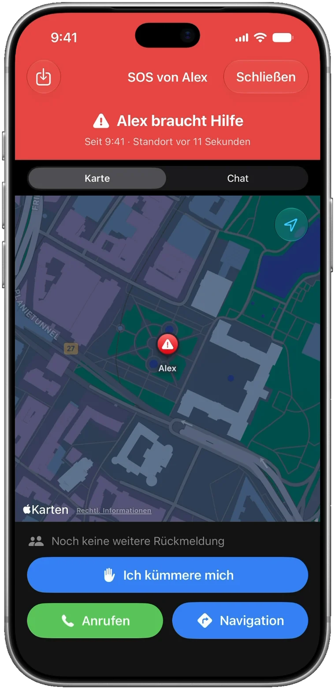
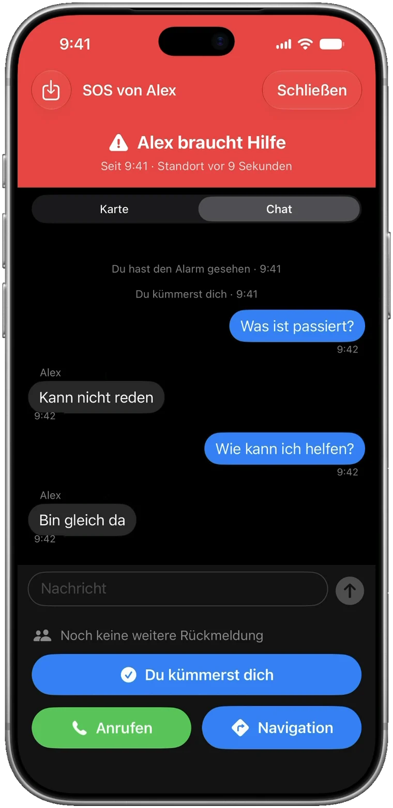
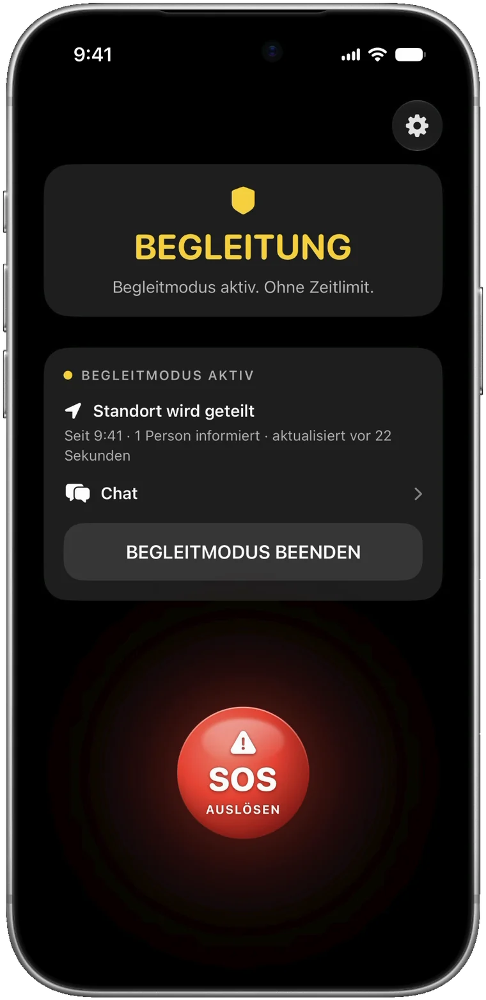
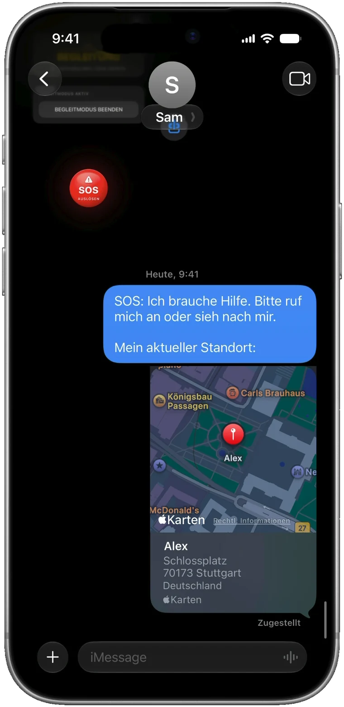
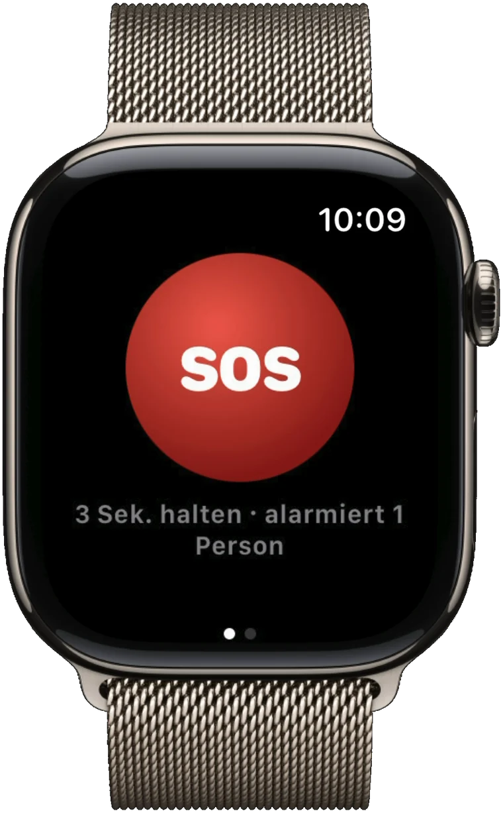
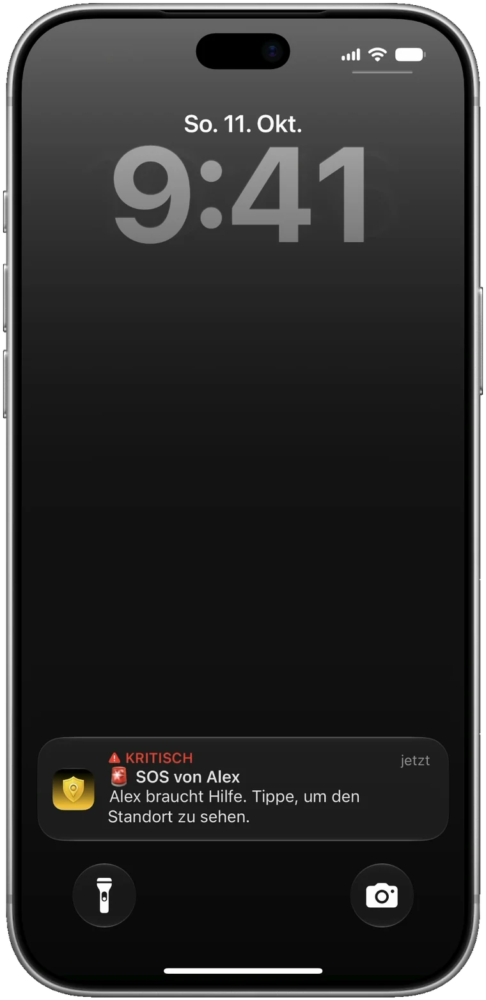
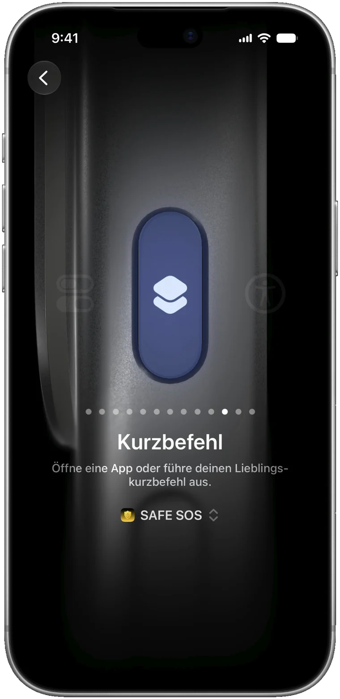
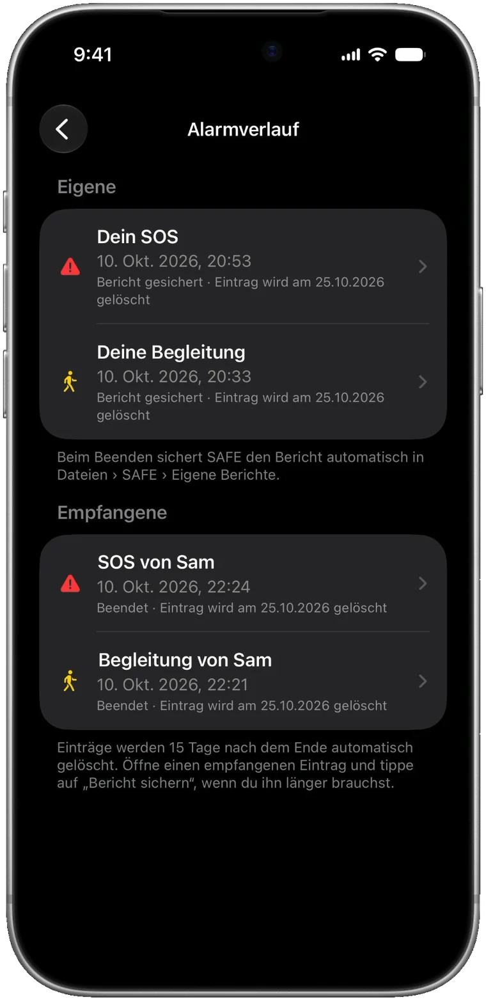
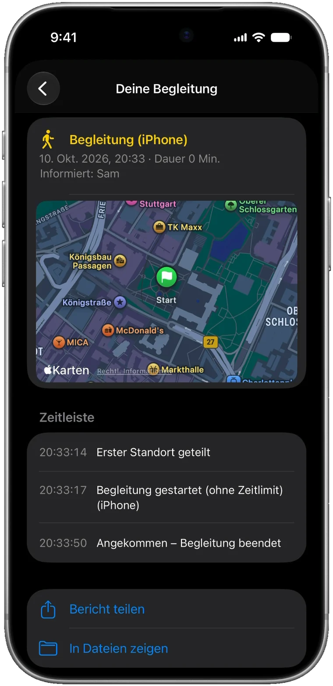
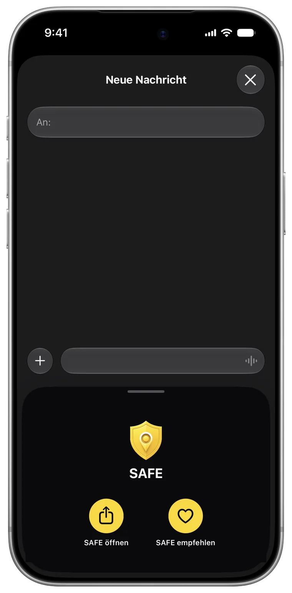

FUNKTIONEN
Alles, was SAFE
für dich bereithält.
Vom SOS bis zum sicheren Heimweg: So unterstützt dich SAFE – auf dem iPhone, an der Apple Watch und in CarPlay.
SOS
Ein Tipp. Alle wissen Bescheid.
Tippe auf SOS und bestätige. SAFE alarmiert sofort alle verbundenen Vertrauenspersonen – als kritischen Hinweis, der auch bei Stummschaltung durchkommt.
Dein Standort wird live geteilt, bis du den SOS beendest. Mit „Entwarnung senden“ erfahren alle, dass alles in Ordnung ist.

BEI DEINEN HELFERN
Sie sehen dich – und du siehst, wer kommt.
Deine Helfer sehen deinen Standort live auf der Karte und können dich direkt anrufen oder per Navigation zu dir finden.
Mit „Ich kümmere mich“ zeigt jemand an, dass er sich darum kümmert. Du siehst sofort, wer deinen Alarm gesehen hat und wer kommt.


CHAT
Schreiben, wenn Reden nicht geht.
Während eines SOS oder einer Begleitung schreibst du mit allen, die du über SAFE alarmiert hast – Ende-zu-Ende-verschlüsselt. Schnellantworten wie „Kann nicht reden“ helfen, wenn es schnell gehen muss.
Bei einem SOS bleibt dein iPhone dabei still. Nach dem Ende ist der Chat noch 24 Stunden offen und steht im Bericht.


BEGLEITMODUS
Begleitet, bis du sicher angekommen bist.
Wähle eine Dauer oder starte ohne Zeitlimit. Deine Begleitpersonen sehen deinen Weg live – bis du mit „Angekommen“ bestätigst.
Läuft die Zeit ab, fragt SAFE kurz nach. Bleibt deine Antwort aus, löst SAFE nach 5 Minuten automatisch einen SOS aus.


KONTAKTE OHNE SAFE
Auch ohne App erreichbar.
Kontakte ohne SAFE bekommen eine SMS mit deinem Standort. SAFE bereitet sie vor, du sendest sie.
Erreicht SAFE niemanden über das Internet, bietet es dir die SMS ebenfalls an.

APPLE WATCH
SAFE am Handgelenk.
Halte SOS auf der Watch 3 Sekunden – mit Mobilfunk-Watch auch ohne iPhone in der Nähe.
Alarme deiner Vertrauenspersonen erreichen dich am Handgelenk: mit Karte, „Ich kümmere mich“, Anrufen und Navigation.


SPERRBILDSCHIRM & LIVE-AKTIVITÄT
Immer im Blick.
Ein Alarm erscheint als kritischer Hinweis auch auf dem Sperrbildschirm – auch bei Stummschaltung.
Läuft ein SOS oder eine Begleitung, siehst du den Stand als Live-Aktivität auf dem Sperrbildschirm und in der Dynamic Island – bei dir und bei deinen Helfern.

WIDGETS & CARPLAY
Natürlich auch im Auto.
Das Widget „SAFE Status“ zeigt auf dem Home-Bildschirm und in CarPlay, ob alles in Ordnung ist, eine Begleitung läuft oder ein SOS aktiv ist – mit Restzeit und Check-in.
Auf dem Sperrbildschirm zeigt das Widget das SAFE-Logo mit Kurzstatus.

ACTION BUTTON & KONTROLLZENTRUM
SOS mit einem Druck.
Lege den Kurzbefehl „SAFE SOS“ auf den Action Button: Ein Druck öffnet direkt die SOS-Bestätigung.
Die Einrichtung findest du in SAFE unter Einstellungen › Action Button. „SAFE SOS“ gibt es auch als Steuerelement im Kontrollzentrum.

VERLAUF & BERICHTE
Alles nachvollziehbar.
Unter „Alarmverlauf“ findest du eigene und empfangene Alarme der letzten 15 Tage – mit Karte, Zeitleiste und Chat.
Berichte eigener Alarme sichert SAFE automatisch als PDF in Dateien. Empfangene Berichte sicherst du mit einem Tipp.


SAFE IN NACHRICHTEN
Direkt aus iMessage.
Öffne SAFE direkt aus der Nachrichten-App oder empfiehl SAFE mit einem Tipp weiter.

12 · DEINE DATEN
So schützt SAFE deine Daten.
SAFE hat keinen eigenen Server. Während eines SOS oder einer Begleitung gehen dein Standort und deine Nachrichten Ende-zu-Ende-verschlüsselt über Apples iCloud an deine Vertrauenspersonen – nur sie können sie lesen, weder Apple noch wir. Danach wird alles gelöscht. Verbindungen, Schlüssel und Verlauf bleiben nur auf deinem Gerät und kommen in kein Backup.
Zur Datenschutzerklärung →